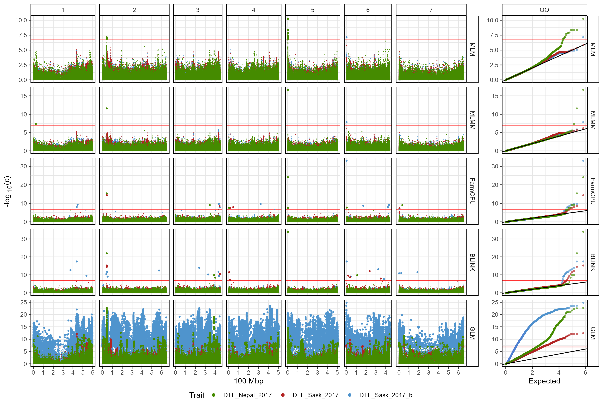
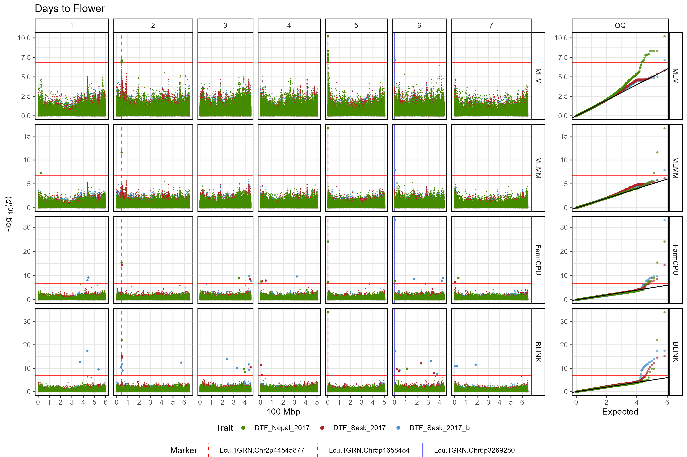
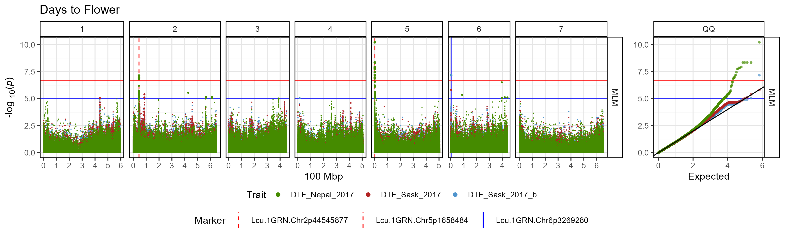

gg_Manhattan_xModels()
07 gg_Manhattan_xModels().RmdThe function gg_Manhattan_xModels() creates manhattan
plots from GAPIT GWAS results for multiple traits and facets them by
Model. This allows the user to compare the results from different traits
across each GWAS model.
Specifying a folder and traits is all that
is needed to create manhattan plots for multiple traits.
# Plot
mp <- gg_Manhattan_xModels(
# Specify a folder with GWAS results
folder = "GWAS_Results/",
# Select traits to plot
traits = c("DTF_Nepal_2017", "DTF_Sask_2017", "DTF_Sask_2017_b") )
# Save
ggsave("figures/gg_Manhattan_xModels_01.png", mp, width = 12, height = 8, bg = "white")
Customized Plot
# Plot
mp <- gg_Manhattan_xModels(
# Specify a folder with GWAS results
folder = "GWAS_Results/",
# Select traits to plot
traits = c("DTF_Nepal_2017", "DTF_Sask_2017", "DTF_Sask_2017_b"),
# Specify a title
title = "Days to Flower",
# Add vertical lines
vlines = c("Lcu.1GRN.Chr2p44545877",
"Lcu.1GRN.Chr5p1658484",
"Lcu.1GRN.Chr6p3269280"),
vline.colors = c("red", "red", "blue"),
vline.types = c(2,2,1),
# Change the legend alignment
legend.box="vertical",
# Choose a GWAS model
models = c("MLM","MLMM","FarmCPU","BLINK") )
# Save
ggsave("figures/gg_Manhattan_xModels_02.png", mp, width = 12, height = 8, bg = "white")
# Plot
mp <- gg_Manhattan_xModels(
# Specify a folder with GWAS results
folder = "GWAS_Results/",
# Select traits to plot
traits = c("DTF_Nepal_2017", "DTF_Sask_2017", "DTF_Sask_2017_b"),
# Specify a title
title = "Days to Flower",
# Set horizontal thresholds bars
threshold = 6.7,
sug.threshold = 5,
# Add vertical lines
vlines = c("Lcu.1GRN.Chr2p44545877",
"Lcu.1GRN.Chr5p1658484",
"Lcu.1GRN.Chr6p3269280"),
vline.colors = c("red", "red", "blue"),
vline.types = c(2,2,1),
# Change the legend alignment
legend.box="vertical",
# Choose a GWAS model
models = "MLM")
# Save
ggsave("figures/gg_Manhattan_xModels_03.png", mp, width = 12, height = 3.5, bg = "white")